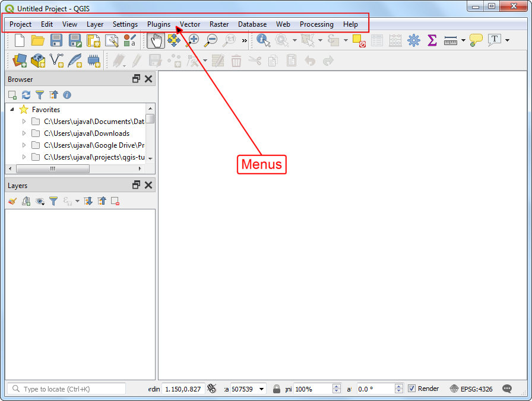
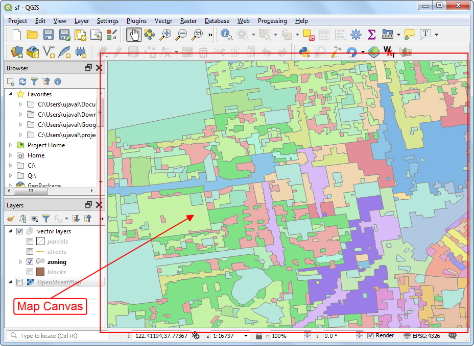
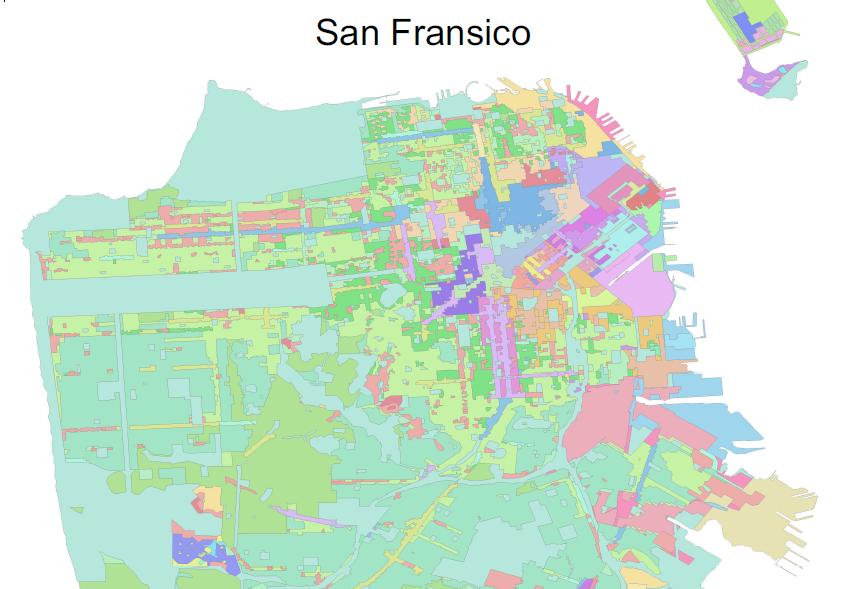
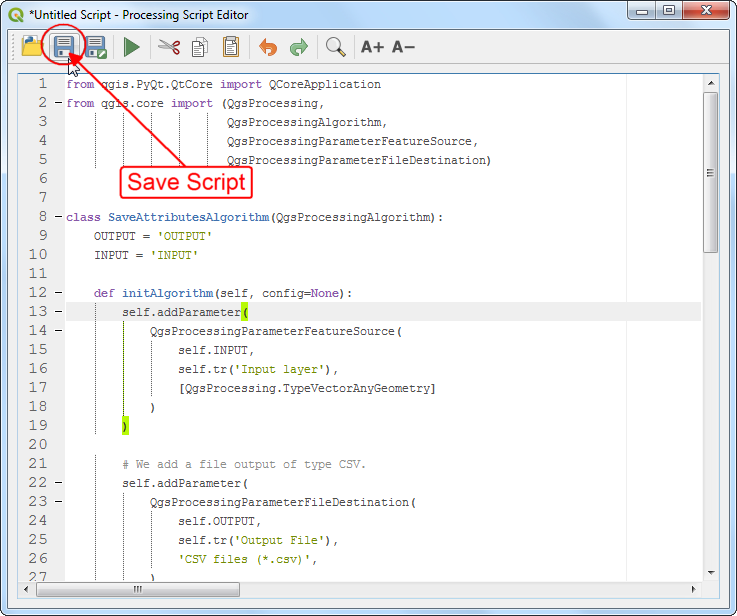
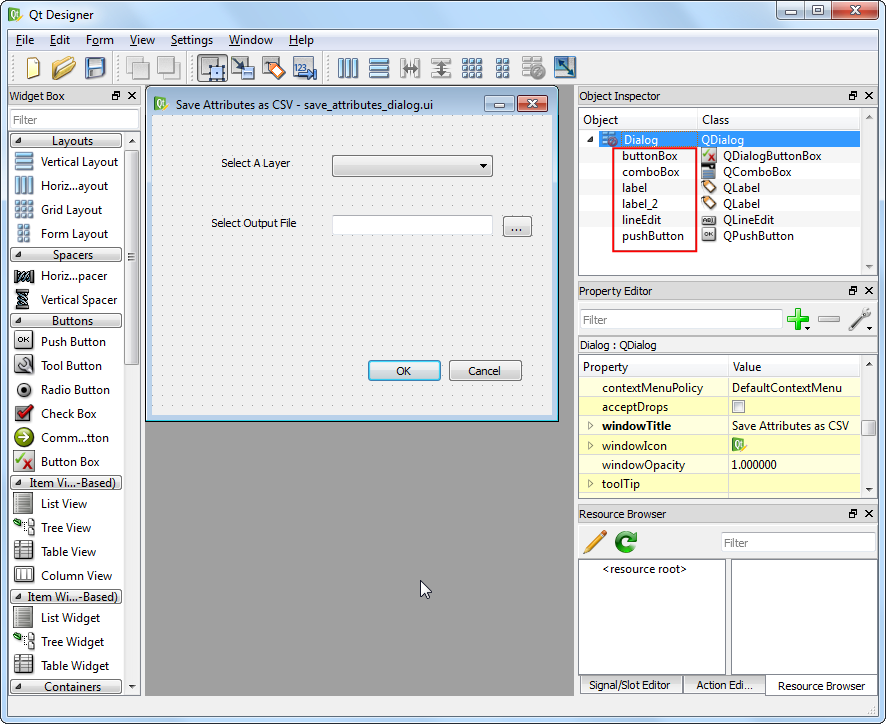
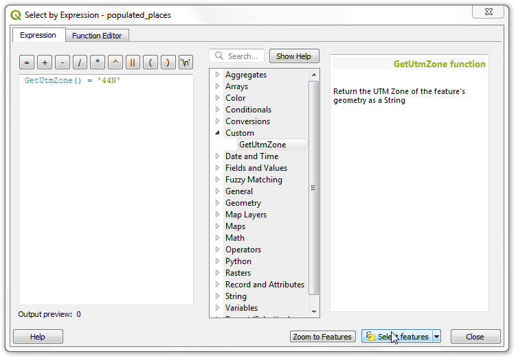

PyQGIS in a Day
Learn the QGIS Python API from the groud up
- Introduction
- Get the Data Package
- Where can you use Python in QGIS?
- Qt, PyQt and PyQGIS
- Hello World!
- Understanding Classes
- Visual Tour of the PyQGIS API
- Running Python Code at QGIS Launch
- Writing Python Console Scripts
- Writing Standalone Python Scripts
- Processing Scripts
- Writing Plugins
- Writing Python Expression Functions
- Resources for Further Learning
- Data Credits
This course is also offered as a in-person class. Please visit www.spatialthoughts.com to see the schedule for upcoming sessions.
Introduction
This class introduces the concepts of Python programming within the QGIS environment. We will cover the full breadth of topics that involve everything from using the Python Console to building a fully functional plugin. We will also explore GUI programming techniques for customizing the QGIS interface using Qt widgets.
Get the Data Package
The code examples in this class use a variety of datasets. All the required layers, project files, icons etc. are available in the pyqgis_in_a_day.zip. Download and unzip this file to the Downloads directory. All scripts assume the data is available in the <home folder>/Downloads/pyqgis_in_a_day/ directory.
Where can you use Python in QGIS?
- Issue commands from Python Console
- Write custom expressions
- Write custom actions
- Create new processing algorithms
- Create plugins
- Automatically run python code when QGIS starts
- Create custom standalone applications
Qt, PyQt and PyQGIS
Qt
Qt is a free and open-source widget toolkit for creating graphical user interfaces as well as cross-platform applications.
QGIS is built using the Qt platform. Both QT and QGIS itself have well-documented APIs that should be used when writing Python code to be run within QGIS.
PyQt
PyQt is the Python interface to Qt. PyQt provides classes and functions to interact with Qt widgets.
PyQGIS
QGIS provides a Python API (Application Programming Interface), commonly known as PyQGIS. PyQGIS is created using SIP and integrates with PyQt.
Fun Fact: Most QGIS class names start with the prefix Qgs. Q is for QT and gs stands for Gary Sherman - the founder of the QGIS project.
C++ API documentation is available at https://qgis.org/api/
Python API documentation is available at https://qgis.org/pyqgis/3.0
Both C++ and Python APIs are identical for most part, but certain functions are not available in the Python API. 1
Hello World!
QGIS Comes with a built-in Python Console and a code editor where you can write and run Python code.
Go to Plugins → Python Console to open the console.

At the >>> prompt, type in the following command and press Enter.
print('Hello World!')Here you are running Python’s print() function with the text ‘Hello World’. The output of the statement will be printed below.

While console is useful for typing 1-2 lines of code or printing information contained in a variable, you should use the built-in editor for typing longer scripts or code snippets. Click the Show Editor button to open the editor panel. Enter the code and click the Run Script button to execute it. The results will appear in the console as before. If you are working on a longer script, you can also click the Save button in the editor to save the script for future use.

Understanding Classes
Before we dive it to PyQGIS, it is important to understand certain concepts related to C++ and Python Classes. Qt as well as QGIS is written in C++ language. Functionality of each Qt/QGIS Widget is implemented as a class - having certain properties and functions. When we use PyQt or PyQGIS classes, it is executing the code in the C++ classes via the python bindings.
Classes vs Objects
A class can be thought of as a template. You cannot use it directly. To use it in a program, you must create an ‘instance’ of it - which uses the template along with the supplied parameters to create an instance of the class. This is known as an object.
mb = QMessageBox()The QMessageBox is a PyQt class for creating a dialog with buttons. To use the class, you create object by instantiating the class. Here mb is an object, which is an instance of the QMessageBox class, created using the default parameters.
Inspecting Objects
type() tells you what is the class of the object
type(mb)dir returns list of the attributes and methods of any object
dir(mb)Methods (or functions)
Classes have methods that provide functionality. You can run the class methods on instance objects. For the QMessageBox class, setText() method will add a text to the dialog.
mb = QMessageBox()
mb.setText('Click OK to confirm')Instance Attributes
Classes have 2 types of attributes - class attributes and instance attributes. Qt provides access functions for instance attributes. For the QMessageBox class, there is a text() method to get the text attribute of the mb instance.
mb = QMessageBox()
mb.setText('Click OK to confirm')
print(mb.text())Class Attributes
Classes also have class attributes which are shared across all instances. The QMessageBox class has Ok and Cancel attributes, which can be referred using QMessageBox.Ok and QMessageBox.Cancel.
mb = QMessageBox()
mb.setText('Click OK to confirm')
mb.setStandardButtons(QMessageBox.Ok | QMessageBox.Cancel)Inheritance
QObject is the most basic class in Qt. All Qt widgets and QGIS classes inherit from QObject. The most basic widget is the QWidget. QWidget contains most properties that are used to describe a window, or a widget, like position and size, mouse cursor, tooltips, etc. The QDialog class is the base class of dialog windows. QMessageBox is a specialized QDialog.

Putting it all together
Try out this simple example which constructs a confirmation dialog using PyQt. You can type the code in the Editor and click Run Script.
mb = QMessageBox()
mb.setText('Click OK to confirm')
mb.setStandardButtons(QMessageBox.Ok | QMessageBox.Cancel)
mb.exec()
Visual Tour of the PyQGIS API
The QgisInterface class provides methods for interaction with the QGIS environment. When QGIS is running, a variable called iface is set up to provide an object of the class QgisInterface to interact with the running QGIS environment. This interface allows access to the map canvas, menus, toolbars and other parts of the QGIS application. Python Console and Plugins can use iface to access various parts of the QGIS interface.
QGIS Main Window
iface.mainWindow()

Change Title
title = iface.mainWindow().windowTitle()
new_title = title.replace('QGIS', 'My QGIS')
iface.mainWindow().setWindowTitle(new_title)Change Icon
import os
icon = 'qgis-black.png'
data_dir = os.path.join(os.path.expanduser('~'), 'Downloads/pyqgis_in_a_day/')
icon_path = os.path.join(data_dir, icon)
icon = QIcon(icon_path)
iface.mainWindow().setWindowIcon(icon)
Menus
iface.projectMenu()
iface.vectorMenu()
iface.viewMenu()
iface.helpMenu()
…

Remove Raster and Vector Menus
vector_menu = iface.vectorMenu()
raster_menu = iface.rasterMenu()
menubar = vector_menu.parentWidget()
menubar.removeAction(vector_menu.menuAction())
menubar.removeAction(raster_menu.menuAction())

Add A New Menu Item
Signals and Slots
GUI programming requires responding to user’s actions. All objects in Qt have a mechanism where they can emit a signal when there is a change in status. i.e. when a user clicks a button, or a window is closed. As a programmer, you can connect the signal to a slot (i.e. a python function) which will be called when the signal is emitted. The general syntax for connecting the signal to a slot is as follows
object.signal.connect(function)A new button or menu item is created using QAction(). Here we create an action and then connect the click signal to a method that opens a website. 2
import webbrowser
def open_website():
webbrowser.open('https://gis.stackexchange.com')
website_action = QAction('Go to gis.stackexchange')
website_action.triggered.connect(open_website)
iface.helpMenu().addSeparator()
iface.helpMenu().addAction(website_action)
Toolbars
iface.pluginToolBar()
iface.attributesToolBar()
iface.mapNavToolToolBar()
…

Change Visibility of a Toolbar
iface.pluginToolBar().setVisible(True)Add a button to a toolbar
import os
from datetime import datetime
icon = 'question.svg'
data_dir = os.path.join(os.path.expanduser('~'), 'Downloads/pyqgis_in_a_day/')
icon_path = os.path.join(data_dir, icon)
def show_time():
now = datetime.now()
current_time = now.strftime("%H:%M:%S")
iface.messageBar().pushMessage('Time is {}'.format(current_time))
action = QAction('Show Time')
action.triggered.connect(show_time)
action.setIcon(QIcon(icon_path))
iface.addToolBarIcon(action)
Projects
QgsProject.instance()
Load a project
import os
data_dir = os.path.join(os.path.expanduser('~'), 'Downloads/pyqgis_in_a_day/')
project = QgsProject.instance()
project_name = 'sf.qgz'
project_path = os.path.join(data_dir, project_name)
project.read(project_path)
Map Canvas
iface.mapCanvas()

Set Canvas Extent to a Layer Extent
layer = iface.activeLayer()
mc = iface.mapCanvas()
mc.setExtent(layer.extent())
mc.refresh()Save Map as an Image
import os
data_dir = os.path.join(os.path.expanduser('~'), 'Downloads/pyqgis_in_a_day/')
image_name = 'sf.png'
image_path = os.path.join(data_dir, image_name)
mc = iface.mapCanvas()
mc.saveAsImage(image_path)
Save Map Rendering as an Image
saveAsImage() method is quick and easy, but you do not have much control over the resulting image. You can’t control the resolution, size or how each layer will be rendered. There is another way to achieve this. You can look at the code for exporting map as an image in QGIS and you will discover 2 classes QgsMapRendererParallelJob and QgsMapRendererSequentialJob that lets you achieve a better result. The code snippet below exports a hi-resolution image of the project. 3
import os
data_dir = os.path.join(os.path.expanduser('~'), 'Downloads/pyqgis_in_a_day/')
image_name = 'sf_hires.png'
image_path = os.path.join(data_dir, image_name)
settings = iface.mapCanvas().mapSettings()
settings.setOutputSize(QSize(1000,1000))
settings.setFlag(QgsMapSettings.DrawLabeling, False)
settings.setFlag(QgsMapSettings.Antialiasing, True)
job = QgsMapRendererSequentialJob(settings)
job.start()
job.waitForFinished()
image = job.renderedImage()
image.save(image_path)
Layers Panel / Table of Contents (TOC)
iface.activeLayer()
iface.layerTreeView()
iface.mapCanvas().layers()
QgsProject.instance().mapLayers()
QgsProject.instance().layerTreeRoot()

Change name of a Layer
layer = iface.activeLayer()
name = layer.name()
layer.setName('sf_' + name)Get all Layers
for layer in QgsProject.instance().mapLayers().values():
print(layer.name())Get only checked (visible) Layers
for layer in iface.mapCanvas().layers():
print(layer.name())Get only selected Layers
for layer in iface.layerTreeView().selectedLayers():
print(layer.name())Get Layers with Hierarchy
This code snippet is taken from the Cheat Sheet for PyQGIS , but contains an important modofication. If you notice carefully, the function getGroupLayers is called recursively from within getGroupLayers. This allows one to even get layers that have sub-groups within layer groups.
def getGroupLayers(group):
print('- group:' + group.name())
for child in group.children():
if isinstance(child, QgsLayerTreeGroup):
getGroupLayers(child)
else:
print(' - layer:' + child.name())
root = QgsProject.instance().layerTreeRoot()
for child in root.children():
if isinstance(child, QgsLayerTreeGroup):
getGroupLayers(child)
elif isinstance(child, QgsLayerTreeLayer):
print ("- layer: " + child.name())
Adding Data Sources
iface.addRasterLayer()
iface.addVectorLayer()
..
QgsProject.instance().addMapLayer()
QgsProject.instance().addMapLayers()

Data sources are identified by an URI (Uniform Resource Identifier) - For files on computer the URI is the file path - For databases, the URI is constructed using QgsDataSourceUri() class and encodes,the database path, table, username, password etc. - For web layers, such as WMF/WFS etc, the URI is the web URL
Adding Vector Layers
import os
data_dir = os.path.join(os.path.expanduser('~'), 'Downloads/pyqgis_in_a_day/')
filename = 'seismic_zones.shp'
uri = os.path.join(data_dir, filename)
iface.addVectorLayer(uri, 'seismic_zones', 'ogr')
filename = 'sf.gpkg|layername=zoning'
uri = os.path.join(data_dir, filename)
iface.addVectorLayer(uri, 'zoning', 'ogr')
filename = 'trees.csv'
csvpath = 'file://' + data_dir + filename
uri = '{}?type=csv&xField={}&yField={}&crs={}'.format(
csvpath, 'Longitude', 'Latitude', 'EPSG:4326')
iface.addVectorLayer(uri, 'trees', 'delimitedtext')
Adding Raster Layers
iface.addRasterLayer() will not give you control on where the layer will be inserted in the layer tree. We can instead use QgsLayerTree class to insert the layer at an appropriate place.
import os
data_dir = os.path.join(os.path.expanduser('~'), 'Downloads/pyqgis_in_a_day/')
filename = 'sf.gpkg:srtm'
uri = 'GPKG:' + data_dir + filename
rlayer = QgsRasterLayer(uri, 'srtm', 'gdal')
QgsProject.instance().addMapLayer(rlayer, False)
rastergroup = QgsLayerTreeGroup('raster layers')
treelayer = QgsLayerTreeLayer(rlayer)
rastergroup.insertChildNode(0, treelayer)
root = QgsProject.instance().layerTreeRoot()
root.insertChildNode(1, rastergroup)
Searching for a layer
blocks = QgsProject.instance().mapLayersByName('blocks')[0]Turning a layer on/off
QgsProject.instance().layerTreeRoot().findLayer(blocks.id()).setItemVisibilityChecked(True)Create a New Vector Layer
A simple example showing how to create a point layer with 1 feature and 1 attribute. 4
vlayer = QgsVectorLayer('Point?crs=EPSG:4326', 'point', 'memory')
provider = vlayer.dataProvider()
provider.addAttributes([QgsField('name', QVariant.String)])
vlayer.updateFields()
f = QgsFeature()
f.setGeometry(QgsGeometry.fromPointXY(QgsPointXY(-122.41, 37.77)))
f.setAttributes(['San Francisco'])
provider.addFeature(f)
vlayer.updateExtents()
QgsProject.instance().addMapLayer(vlayer)Saving Layers to Disk
Use the QgsRasterFileWriter or QgsVectorFileWriter classes for writing layers to disk. 5
import os
data_dir = os.path.join(os.path.expanduser('~'), 'Downloads/pyqgis_in_a_day/')
options = QgsVectorFileWriter.SaveVectorOptions()
options.actionOnExistingFile = QgsVectorFileWriter.CreateOrOverwriteLayer
options.layerName = 'point'
filename = 'sf.gpkg'
path = os.path.join(data_dir, filename)
QgsVectorFileWriter.writeAsVectorFormat(vlayer, path, options)Symbology and Labeling

Displaying a label with a background color
This is a vast topic, but you can get a taste of the flexibility offered by the API to control all aspects of labelling. Notice the class name QgsPalLayerSettings - this is because QGIS uses a labelling library called PAL for labels. The code snippet below shows how to create a label for a point layer with a background color. 6
vlayer = QgsProject.instance().mapLayersByName('point')[0]
symbol = QgsMarkerSymbol.createSimple({'name': 'square', 'color': 'red'})
vlayer.renderer().setSymbol(symbol)
label_settings = QgsPalLayerSettings()
#label_settings.drawBackground = True
label_settings.fieldName = 'name'
text_format = QgsTextFormat()
background_color = QgsTextBackgroundSettings()
background_color.setFillColor(QColor('white'))
background_color.setEnabled(True)
text_format.setBackground(background_color )
label_settings.setFormat(text_format)
vlayer.setLabeling(QgsVectorLayerSimpleLabeling(label_settings))
vlayer.setLabelsEnabled(True)
vlayer.triggerRepaint()
Processing
While the PyQGIS API providers many functions to work with layers, features, attributes and geometry - it is a much better practice to use the built-in processing algorithms to alter the layers or do any analysis. This will give you better performance and result in much lesser code. Here are some examples on how to use processing algorithms from Python to do vector and raster layer editing.

Get min/max value from a Raster Layer
import os
data_dir = os.path.join(os.path.expanduser('~'), 'Downloads/pyqgis_in_a_day/')
filename = 'sf.gpkg:srtm'
uri = 'GPKG:' + data_dir + filename
rlayer = QgsRasterLayer(uri, 'srtm', 'gdal')
results = processing.run("qgis:rasterlayerstatistics",
{'INPUT': rlayer,'BAND':1})
print('min:{},max:{}'.format(results['MIN'], results['MAX']))Create a hillshade from a DEM
import os
data_dir = os.path.join(os.path.expanduser('~'), 'Downloads/pyqgis_in_a_day/')
filename = 'sf.gpkg:srtm'
uri = 'GPKG:' + data_dir + filename
rlayer = QgsRasterLayer(uri, 'srtm', 'gdal')
output_name = 'hillshade.tif'
output_path = os.path.join(data_dir, output_name)
results = processing.runAndLoadResults("qgis:hillshade",
{'INPUT': rlayer,
'Z_FACTOR':2,
'AZIMUTH':300,
'V_ANGLE':40,
'OUTPUT': output_path})
print(results)
Edit Attribute Table of a Vector Layer
When you use processing, a new layer is created by each algorithm. This example shows, how to use processing to overwrite the original layer with the results of processing.
import os
data_dir = os.path.join(os.path.expanduser('~'), 'Downloads/pyqgis_in_a_day/')
filename = 'sf.gpkg|layername=blocks'
uri = os.path.join(data_dir, filename)
blocks = QgsVectorLayer(uri, 'blocks', 'ogr')
output = processing.run(
"qgis:deletecolumn",
{'INPUT': blocks,'COLUMN':['multigeom'],'OUTPUT':'memory:'})
outputlayer = output['OUTPUT']
final = processing.run("qgis:fieldcalculator",
{'INPUT':outputlayer,
'FIELD_NAME':'area',
'FIELD_TYPE':0,
'FIELD_LENGTH':10,
'FIELD_PRECISION':3,
'NEW_FIELD':True,
'FORMULA':'$area',
'OUTPUT':'memory:'})
finallayer = final['OUTPUT']
options = QgsVectorFileWriter.SaveVectorOptions()
# We overwrite the original layer
options.layerName = 'blocks'
options.actionOnExistingFile = QgsVectorFileWriter.CreateOrOverwriteLayer
output_file = 'sf.gpkg'
output_path = os.path.join(data_dir, output_file)
QgsVectorFileWriter.writeAsVectorFormat(finallayer, output_path, options)
QgsProject.instance().reloadAllLayers()Print Layouts

Creating a PDF with Title
import os
data_dir = os.path.join(os.path.expanduser('~'), 'Downloads/pyqgis_in_a_day/')
project = QgsProject.instance()
extent = QgsRectangle(-122.52, 37.71, -122.35, 37.83)
layout = QgsPrintLayout(project)
layout.initializeDefaults()
pages = layout.pageCollection()
pages.beginPageSizeChange()
page = pages.page(0)
page.setPageSize('A4', QgsLayoutItemPage.Landscape)
pages.endPageSizeChange()
page_center = page.pageSize().width() / 2
map = QgsLayoutItemMap(layout)
map.setRect(QRectF(-122.52, 37.71, -122.35, 37.83))
map.setExtent(extent)
a4 = QPageSize().size(QPageSize.A4, QPageSize.Millimeter)
map.attemptResize(QgsLayoutSize(a4.height(), a4.width()))
layout.addItem(map)
title = QgsLayoutItemLabel(layout)
title.setText('San Francisco')
title.setFont(QFont('Arial', 36))
title.adjustSizeToText()
title.setReferencePoint(QgsLayoutItem.UpperMiddle)
title.attemptMove(QgsLayoutPoint(page_center, 10))
layout.addItem(title)
output_file = 'sf.pdf'
output_path = os.path.join(data_dir, output_file)
exporter = QgsLayoutExporter(layout)
exporter.exportToPdf(
output_path, QgsLayoutExporter.PdfExportSettings())
Running Python Code at QGIS Launch
It is possible to execute some PyQGIS code every time QGIS starts. QGIS looks for a file named startup.py in the user’s Python home directory, and if it is found, executes it. This file is very useful in customizing QGIS interface with techniques learnt in the previous section.
If you are running multiple versions of QGIS, a very useful customization is to display the QGIS version number and name in the main window. The version name is stored in a global QGIS variable called qgis_version. We can read that variable and set the main window’s title with it. We connect this code to the signal iface.initializationCompleted signal when the main window is loaded.
Create a new file named startup.py with the following code. Note the imports at the top - including iface. When we ran the code snippets in the Python Console, we did not have to import any modules since they are done automatically when the console starts. For pyqgis scripts elsewhere, we have to explicitly import the modules (classes) that we want to use.
from qgis.utils import iface
from qgis.core import QgsExpressionContextUtils
def customize():
version = QgsExpressionContextUtils.globalScope().variable('qgis_version')
title = iface.mainWindow().windowTitle()
iface.mainWindow().setWindowTitle('{} | {}'.format(title,version))
iface.initializationCompleted.connect(customize)This file needs to be copied to the appropriate directory on your system. See QGIS documentation for details on the path for your platform. For windows users, the directory will be as follows. Replace {username} with your user name.
For Windows, this directory is C:/Users/{username}/AppData/Roaming/QGIS/QGIS3

Once you copy the file at that location, restart QGIS. The title bar should now have the QGIS version name in it.

Exercise
Trying opening a new project in QGIS after you have restarted GIS with startup.py file in place. You will notice that the custom title with the version name is replaced with the default title.
Make a change to your startup.py so that the customization is applied even when a new project is loaded.
Writing Python Console Scripts
We will now see how can we write python scripts, save them and run them within QGIS. We will also see examples of best practices - such as validating inputs, writing files safely and communicating the status to the user.
A goal of the script is to read the features of a selected vector layer, and write its attributes to a CSV file.
Open the Python Console and click the Show Editor button. Copy/paste the following code. Make sure to replace the username in the file path with your username. Click the Save button and save the file as save_attributes_console.py. The file can be saved anywhere.

import os
data_dir = os.path.join(os.path.expanduser('~'), 'Downloads/pyqgis_in_a_day/')
output_name = 'output.csv'
output_path = os.path.join(data_dir, output_name)
layer = iface.activeLayer()
# Check if a layer is selected
if not layer:
iface.messageBar().pushMessage('Please select a layer', level=Qgis.Critical)
# Check if the selected layer is a vector layer
if layer.type() != QgsMapLayer.VectorLayer:
iface.messageBar().pushMessage('Please select a vector layer', level=Qgis.Critical)
# Using*with* statement which takes care of closing the files and handling errors
with open(output, 'w') as output_file:
fieldnames = [field.name() for field in layer.fields()]
## write header
line = ','.join(name for name in fieldnames) + '\n'
output_file.write(line)
# write feature attributes
for f in layer.getFeatures():
line = ','.join(str(f[name]) for name in fieldnames) + '\n'
output_file.write(line)
iface.messageBar().pushMessage(
'Success:', 'Output file written at ' + output, level=Qgis.Success)You can run this script by clicking the Run Script button. The script will process the layer and write the file at the given location.

Writing Standalone Python Scripts
Having the python script run within QGIS is useful and desired most of the time. But there is a way to write python scripts that run on your system without QGIS being open. Let’s convert the script from the previous section to a standalone pyqgis script.
Create a new file with the code below and save it as save_attributes_standalone.py.
import os
from qgis.core import QgsApplication, QgsVectorLayer
qgs = QgsApplication([], False)
qgs.initQgis()
data_dir = os.path.join(os.path.expanduser('~'), 'Downloads/pyqgis_in_a_day/')
filename = 'sf.gpkg|layername=zoning'
uri = os.path.join(data_dir, filename)
layer = QgsVectorLayer(uri, 'zoning', 'ogr')
output_name = 'output.csv'
output_path = os.path.join(data_dir, output_name)
with open(output_path, 'w') as output_file:
fieldnames = [field.name() for field in layer.fields()]
line = ','.join(name for name in fieldnames) + '\n'
output_file.write(line)
for f in layer.getFeatures():
line = ','.join(str(f[name]) for name in fieldnames) + '\n'
output_file.write(line)
print('Success: ', 'Output file written at' + output_path)
qgs.exitQgis()You will notice that the script is almost exactly the same, but with a few notable changes. First there is the import statement at the top, to explicitly import the required modules. Next, we create an instance of the QgsApplication class and run initQis() method to load the QGIS data providers and layer registry. Finally we call exitQgis() to remove them from memory. Here we don’t have a way to take user input, so we hard-code the path to the input layer. Also we don’t have the QGIS GUI, we have no way of displaying the messages, so we remove those statements.
When you run the script within QGIS environment, all the paths to QGIS libraries and environment variables are already set and python is able to find and use it. But when you run the script outside of QGIS, you need to set them yourself. On Windows, you can do this using a batch file. Create a new file named run_script.bat with the following code. Make sure to save it in the same directory.
@echo off
set OSGEO4W_ROOT=C:\OSGeo4W64
call "%OSGEO4W_ROOT%\bin\o4w_env.bat"
call "%OSGEO4W_ROOT%\bin\qt5_env.bat"
call "%OSGEO4W_ROOT%\bin\py3_env.bat"
set PATH=%OSGEO4W_ROOT%\bin;%OSGEO4W_ROOT%\apps\qgis-ltr\bin;%OSGEO4W_ROOT%\apps\Qt5\bin;%PATH%
set PYTHONPATH=%OSGEO4W_ROOT%\apps\qgis-ltr\python;%PYTHONPATH%
set QGIS_PREFIX_PATH=%OSGEO4W_ROOT%\apps\qgis-ltr
set QT_QPA_PLATFORM_PLUGIN_PATH=%OSGEO4W_ROOT%\apps\Qt5\plugins
python3 save_attributes_standalone.pyOpen the command prompt, browse to the directory with the above files, type run_script.bat and press Enter.
You can also just double-click the
run_script.batto run it, but you will not see any error or success messages. So it is always a good idea to run the script from the shell.
The script will run and produce the output at the given path.

Processing Scripts
We already saw 2 different ways to write a Python script in QGIS. But there is another way - and it is the preferred approach to write scripts. Whenever you are writing a new script, consider using the built-in Processing Framework. This has several advantages. First, taking user input and writing output files is far easier because Processing Framework offers standardized user interface for these. Second, having your script in the Processing Toolbox also allows it to be part of any Processing Model or be run as a Batch job with multiple inputs. This tutorial will show how to write a custom python script that can be part of the Processing Framework in QGIS.
We will now see how the Python Console script can be converted to a Processing script. But first, a word on Python Classes.
Writing a Python Class
We have sen how to use a class from PyQt or PyQGIS libraries. But we have not written a new class. To write a Processing Script, we must write a new class. A new class is defined using the word class. All classes have a function called__init__(), which is always executed when a new object is being created. There is also the keyword self which refers to the current instance of the class.
class Hello:
def __init__(self, greeting):
self.greeting = greeting
def hello(self):
print(self.greeting, 'World!')
hi = Hello('Hi')
hi.hello()
hola = Hello('Hola')
hola.hello()As we saw, all PyQGIS and PyQt inherit from other classes. When using them, sometimes you will see the use of a function super(). Here super refers to the parent class and when you are using the child class, you need to initialize the parent class using this keyword. Let’s see this in action.
class Talk(Hello):
def __init__(self, language):
if language == 'English':
super().__init__('Hi')
elif language == 'Spanish':
super().__init__('Hola')
else:
raise ValueError('Unsupported Language')
t = Talk('English')
t.hello()
t = Talk('Spanish')
t.hello()
Writing a Processing Script
To create a new processing script, go to Processing → Processing Toolbox. Click the Scripts button and select Create New Script...

Copy/paste the following code into the Processing Script Editor.
from PyQt5.QtCore import QCoreApplication
from qgis.core import (QgsProcessing,
QgsProcessingAlgorithm,
QgsProcessingParameterFeatureSource,
QgsProcessingParameterFileDestination)
class SaveAttributesAlgorithm(QgsProcessingAlgorithm):
OUTPUT = 'OUTPUT'
INPUT = 'INPUT'
def initAlgorithm(self, config=None):
self.addParameter(
QgsProcessingParameterFeatureSource(
self.INPUT,
self.tr('Input layer'),
[QgsProcessing.TypeVectorAnyGeometry]
)
)
# We add a file output of type CSV.
self.addParameter(
QgsProcessingParameterFileDestination(
self.OUTPUT,
self.tr('Output File'),
'CSV files (*.csv)',
)
)
def processAlgorithm(self, parameters, context, feedback):
source = self.parameterAsSource(parameters, self.INPUT, context)
csv = self.parameterAsFileOutput(parameters, self.OUTPUT, context)
fieldnames = [field.name() for field in source.fields()]
# Compute the number of steps to display within the progress bar and
# get features from source
total = 100.0 / source.featureCount() if source.featureCount() else 0
features = source.getFeatures()
with open(csv, 'w') as output_file:
# write header
line = ','.join(name for name in fieldnames) + '\n'
output_file.write(line)
for current, f in enumerate(features):
# Stop the algorithm if cancel button has been clicked
if feedback.isCanceled():
break
# Add a feature in the sink
line = ','.join(str(f[name]) for name in fieldnames) + '\n'
output_file.write(line)
# Update the progress bar
feedback.setProgress(int(current * total))
return {self.OUTPUT: csv}
def name(self):
return 'save_attributes'
def displayName(self):
return self.tr('Save Attributes As CSV')
def group(self):
return self.tr(self.groupId())
def groupId(self):
return ''
def tr(self, string):
return QCoreApplication.translate('Processing', string)
def createInstance(self):
return SaveAttributesAlgorithm()
By now, you must be familiar with the code in the processAlgorithm() method. This method contains the main logic of the script that gets executed when the user clicks the Run button. Here we are creating a new class called SaveAttributesAlgorithm. As this is a processing script, we must inherit from the QgsProcessingAlgorithm class. The initAlgorithm() method is called to set-up the inputs and the outputs. There are other methods that set the algorithm name and group.
Click the Save Script button and save the script as save_attributes_processing.py. This script must be saved inside the {profile foler}/processing/scripts/ directory so it can be loaded when QGIS starts.

Once saved, the algorithm will appear in the Processing Toolbox under Scripts → Save Attributes As CSV. Double-click to launch it. You will see the standard processing algorithm dialog where the user can select inputs and outputs easily. Progress bar is shown correctly and the execution also stops if the user presses the Cancel button. If the large is large and the algorithm would take time to process it, the user can also close the window and the algorithm will continue to run in the background.

Writing Plugins
Plugins are a great way to extend the functionality of QGIS. You can write plugins using Python that can range from adding a simple button to sophisticated tool-kits. There are 2 broad categories of python plugins - Processing Plugins and GUI Plugins. We will cover both in this section.
A Minimal Plugin
Plugins are much more integrated into the QGIS system than Python Scripts. They are managed by Plugin Manager and are initialized when QGIS starts. To understand the required structure, let’s see what a minimal plugin looks like. You can learn more about this structure at QGIS Minimalist Plugin Skeleton.
We will be the same script for saving attributes of a vector layer and convert it to a plugin. The first requirement for plugins is a file called metadata.txt. This file contains general info, version, name and some other metadata used by plugins website and plugin manager.
metadata.txt
[general]
name=Save Attributes
description=This plugin saves the attributes of the selected vector layer as a CSV file
version=1.0
qgisMinimumVersion=3.0
author=Ujaval Gandhi
email=ujaval@spatialthoughts.comSecond file is called __init__.py which is the starting point of the plugin. It has to have the classFactory() method that returns the instance of the main plugin class.
__init__.py
from .save_attributes import SaveAttributesPlugin
def classFactory(iface):
return SaveAttributesPlugin(iface)Third is the file that contains the main logic of the plugin. It must have __init__() method that gives the plugin access to the QGIS Interface (iface). The initGui() method is called when the plugin is loaded and unload() method which is called when the plugin is unloaded. For now, we are creating a minimal plugin that just add a button and a menu entry that displays message when clicked.
save_attributes.py
import os
import sys
import inspect
from PyQt5.QtWidgets import QAction
from PyQt5.QtGui import QIcon
cmd_folder = os.path.split(inspect.getfile(inspect.currentframe()))[0]
class SaveAttributesPlugin:
def __init__(self, iface):
self.iface = iface
def initGui(self):
icon = os.path.join(os.path.join(cmd_folder, 'logo.png'))
self.action = QAction(QIcon(icon), 'Save Attributes as CSV', self.iface.mainWindow())
self.action.triggered.connect(self.run)
self.iface.addPluginToMenu('&Save Attributes', self.action)
self.iface.addToolBarIcon(self.action)
def unload(self):
self.iface.removeToolBarIcon(self.action)
self.iface.removePluginMenu('&SaveAttributes', self.action)
del self.action
def run(self):
self.iface.messageBar().pushMessage('Hello from Plugin')Create these 3 files and put them in a folder named save_attributes. Copy the logo.png file from <home folder>/Downloads/pyqgis_in_a_day/logo.png to this folder. Copy the folder to the python plugins directory at {profile folder}/python/plugins.

Restart QGIS. Go to Plugins → Manage and Install plugins… → Installed and enable the Save Attributes plugin. You will see the menu entry and the toolbar icon from the plugin.
Processing Plugin
The new and preferred way to write plugins in QGIS is using the Processing Framework. It removes the need for you to design the user interface. The resulting plugin integrates seamlessly in the Processing Toolbox and is inoperable with other processing algorithms.
Let’s take the minimal plugin and see what is required to make it a functional processing plugin. We need 2 additional files. One to define the processing algorithm and another to define a new processing provider.
The processing algorithm file is identical to the script we wrote earlier. Create a new file called save_attributes_algorithm.py with the contents of the processing script from the ‘Writing a Processing Script’ section of this document.
Next, we need to define a new processing provider. Create a new file save_attributes_provider.py with the following content.
import os import inspect from PyQt5.QtGui import QIcon
from qgis.core import QgsProcessingProvider from .save_attributes_algorithm import SaveAttributesAlgorithm
class SaveAttributesProvider(QgsProcessingProvider):
def __init__(self):
QgsProcessingProvider.__init__(self)
def unload(self):
pass
def loadAlgorithms(self):
self.addAlgorithm(SaveAttributesAlgorithm())
def id(self):
return 'save_attributes'
def name(self):
return self.tr('Save Attributes')
def icon(self):
cmd_folder = os.path.split(inspect.getfile(inspect.currentframe()))[0]
icon = QIcon(os.path.join(os.path.join(cmd_folder, 'logo.png')))
return icon
def longName(self):
return self.name()We now make changes to the existing save_attributes.py file to import and initialize the new processing provider. Change the contents of the file to the following
import os
import sys
import inspect
from PyQt5.QtWidgets import QAction
from PyQt5.QtGui import QIcon
from qgis.core import QgsProcessingAlgorithm, QgsApplication
import processing
from .save_attributes_provider import SaveAttributesProvider
cmd_folder = os.path.split(inspect.getfile(inspect.currentframe()))[0]
class SaveAttributesPlugin:
def __init__(self, iface):
self.iface = iface
def initProcessing(self):
self.provider = SaveAttributesProvider()
QgsApplication.processingRegistry().addProvider(self.provider)
def initGui(self):
self.initProcessing()
icon = os.path.join(os.path.join(cmd_folder, 'logo.png'))
self.action = QAction(QIcon(icon), 'Save Attributes as CSV', self.iface.mainWindow())
self.action.triggered.connect(self.run)
self.iface.addPluginToMenu('&Save Attributes', self.action)
self.iface.addToolBarIcon(self.action)
def unload(self):
QgsApplication.processingRegistry().removeProvider(self.provider)
self.iface.removeToolBarIcon(self.action)
self.iface.removePluginMenu('&SaveAttributes', self.action)
del self.action
def run(self):
processing.execAlgorithmDialog('save_attributes:save_attributes')The plugin folder should look at follows.

Now let’s reload the plugin and see what it looks like. This is a helper plugin which allows iterative development of plugins. Using this plugin, you can change your plugin code and have it reflected in QGIS without having to restart QGIS every time. Find and install the Plugin Reloader plugin. Once installed, go to Plugin → Plugin Reloader → Choose a plugin to be reloaded. Select save_attributes in the Configure Plugin reloader dialog.

Once reloaded, you can click on the toolbar button or Plugin → Save Attributes → Save Attributes As CSV to launch the processing algorithm.

GUI Plugin
There are times when the plugin needs to modify the QGIS GUI or add complex widgets. In such cases, you will have to build and program the widgets using PyQt and PyQGIS APIs. We will now see how can we design and program a dialog box to the Minimal plugin and convert it to a GUI plugin.
Open Qt Designer from C:\OSGeo4W\bin\qgis-designer.bat
Select the Dialog with Buttons Bottom and click Create.

This is a basic dialog box that we will modify later. Let’s save it for now. Name the file as save_attributes_dialog.ui and save it in the plugin directory {profile_folder}\python\plugins\save_attributes\

We need to create a new file that reads this .ui file and creates a PyQt QDialog() object from it. Create a new save_attributes_dialog.py in the plugin folder with the following content.
import os
from PyQt5 import uic
from PyQt5 import QtWidgets
FORM_CLASS, _ = uic.loadUiType(os.path.join(
os.path.dirname(__file__), 'save_attributes_dialog.ui'))
class SaveAttributesDialog(QtWidgets.QDialog, FORM_CLASS):
def __init__(self, parent=None):
super(SaveAttributesDialog, self).__init__(parent)
self.setupUi(self)Now we can import this into the main plugin file save_attributes.py and initialize the dialog. Replace the content of the file with the following.
import os
import sys
import inspect
from PyQt5.QtWidgets import QAction
from PyQt5.QtGui import QIcon
from .save_attributes_dialog import SaveAttributesDialog
cmd_folder = os.path.split(inspect.getfile(inspect.currentframe()))[0]
class SaveAttributesPlugin:
def __init__(self, iface):
self.iface = iface
def initGui(self):
icon = os.path.join(os.path.join(cmd_folder, 'logo.png'))
self.action = QAction(QIcon(icon), 'Save Attributes as CSV', self.iface.mainWindow())
self.action.triggered.connect(self.run)
self.iface.addPluginToMenu('&Save Attributes', self.action)
self.iface.addToolBarIcon(self.action)
self.first_start = True
def unload(self):
self.iface.removeToolBarIcon(self.action)
self.iface.removePluginMenu('&Save Attributes', self.action)
del self.action
def run(self):
if self.first_start == True:
self.first_start = False
self.dlg = SaveAttributesDialog()
self.dlg.show()Back in QGIS, reload the plugin. Click the Save Attributes As CSV toolbar button. You will see the UI dialog appear.

Now we can go back to Qt Designer and complete the UI design. You can drag various elements like label, Combo Box, Line Edit and Push Button as shown below. Once complete, save the dialog. Note the name of the object names of various widgets. We will use these names to program these elements.

The main file save_attributes.py needs to be changed. Most importantly we need to add a new select_output_file() method and connect it to the … button. Rest of the code should be familiar from the previous sections.
import os
import sys
import inspect
from PyQt5.QtGui import QIcon
from PyQt5.QtWidgets import QAction, QFileDialog
from qgis.core import QgsProject, Qgis, QgsMapLayer
from .save_attributes_dialog import SaveAttributesDialog
cmd_folder = os.path.split(inspect.getfile(inspect.currentframe()))[0]
class SaveAttributesPlugin:
def __init__(self, iface):
self.iface = iface
def initGui(self):
icon = os.path.join(os.path.join(cmd_folder, 'logo.png'))
self.action = QAction(QIcon(icon), 'Save Attributes as CSV', self.iface.mainWindow())
self.action.triggered.connect(self.run)
self.iface.addPluginToMenu('&Save Attributes', self.action)
self.iface.addToolBarIcon(self.action)
self.first_start = True
def unload(self):
self.iface.removeToolBarIcon(self.action)
self.iface.removePluginMenu('&Save Attributes', self.action)
del self.action
def select_output_file(self):
filename, _filter = QFileDialog.getSaveFileName(
self.dlg, "Select output file ","", '*.csv')
self.dlg.lineEdit.setText(filename)
def run(self):
if self.first_start == True:
self.first_start = False
self.dlg = SaveAttributesDialog()
self.dlg.pushButton.clicked.connect(self.select_output_file)
layers = QgsProject.instance().mapLayers().values()
vectorlayers = [layer for layer in layers if layer.type() == QgsMapLayer.VectorLayer]
self.dlg.comboBox.clear()
self.dlg.lineEdit.clear()
self.dlg.comboBox.addItems([layer.name() for layer in vectorlayers])
self.dlg.show()
# Run the dialog event loop
result = self.dlg.exec_()
# See if OK was pressed
if result:
filename = self.dlg.lineEdit.text()
with open(filename, 'w') as output_file:
selectedLayerName = self.dlg.comboBox.currentText()
selectedLayer = QgsProject.instance().mapLayersByName(selectedLayerName)[0]
fieldnames = [field.name() for field in selectedLayer.fields()]
# write header
line = ','.join(name for name in fieldnames) + '\n'
output_file.write(line)
# wirte feature attributes
for f in selectedLayer.getFeatures():
line = ','.join(str(f[name]) for name in fieldnames) + '\n'
output_file.write(line)
self.iface.messageBar().pushMessage(
'Success', 'Output file written at ' + filename, level=Qgis.Success)Reload and you will see the fully functioning plugin.

Writing Python Expression Functions
Expressions in QGIS have a lot of power and are used in many core features: selection, calculating field values, styling, labeling etc. QGIS also has support for user-defined expressions. With a little bit of python programming, you can define your own functions that can be used within the expression engine.
Custom python functions in QGIS use decorators to make the function available across the system. Let’s understand how decorators work.
Understanding Python Decorators
Decorators are functions that take a function as an input and returns a modified function. Decorators are an easy way to inject additional functionality into existing functions without a lot of repeated code. To decorate a function, you use the @decorator syntax above the function definition.
def fancify(normal_function):
def fancy(*args, **kwargs):
val = normal_function(*args, **kwargs)
return val.replace('Hello', 'Hellooo!!!')
return fancy
def hello(name):
return 'Hello ' + name
print(hello('World'))
@fancify
def hello(name):
return 'Hello ' + name
print(hello('World'))Custom function to find UTM Zone of a feature
We will define a custom function that finds the UTM zone number of a map feature. Open the project places.qgz from <home folder>/Downloads/pyqgis_in_a_day/places.qgz
Click the Select features using an expression button on the Attributes Toolbar.
 In the Select by Expression dialog, switch to the Function Editor tab. Here you can write any PyQGIS code that will be executed by the expression engine. We will define a new function called
In the Select by Expression dialog, switch to the Function Editor tab. Here you can write any PyQGIS code that will be executed by the expression engine. We will define a new function called GetUtmZone(). Note the use of @qgsfunction decorator which registers this function with the expression engine. Enter the following code.
import math
from qgis.core import *
from qgis.gui import *
@qgsfunction(args=0, group='Custom', usesgeometry=True)
def GetUtmZone(value1, feature, parent):
"""Return the UTM Zone of the feature's geometry as a String"""
centroid = feature.geometry()
longitude = centroid.asPoint().x()
latitude = centroid.asPoint().y()
zone_number = math.floor(((longitude + 180) / 6) % 60) + 1
if latitude >= 0:
zone_letter = 'N'
else:
zone_letter = 'S'
return '%d%s' % (int(zone_number), zone_letter)
Switch to the Expression tab in the Select by expression dialog. Find and expand the Custom group in the Functions section. You will notice a new custom function GetUtmZone in the list. We can now use this function in the expressions just like any other function. Type the following expression in the editor and click Select.
GetUtmZone() == '44N'
Back in the main QGIS window, you should see some points highlighted in yellow. These are the points falling in the UTM Zone we specified in the expression. 
You can also use the expression in the field calculator. Open the field calculator and add a new virtual field called utmzone with the following expression
GetUtmZone()
You will see the attribute table updates with the corresponding utm zone for each feature.

Exercise
Write a new custom function called unique_values() that takes the a comma-separated string value and removes duplicate values.
For example,
'cat,mouse,dog,mouse' --> 'cat,mouse,dog'Test this function by reading values from the allnames column and creating a new column uniquenames.
Below is the template to get started.
from qgis.core import *
from qgis.gui import *
@qgsfunction(args='auto', group='Custom')
def unique_values(value, feature, parent):
# Write your code hereResources for Further Learning
- Official QGIS Documentation - PyQGIS Developer Cookbook
- PyQGIS 101: Introduction to QGIS Python programming for non-programmers by Anita Graser
- PyQGIS Samples by Thomas Gratier
- QGIS Python tests
Data Credits
blocks,parcels,streets,zoning,trees,seasmic_zones. Downloaded from DataSF Open Data PortalsrtmNASA Shuttle Radar Topography Mission Global 1 arc second provided by The Land Processes Distributed Active Archive Center (LP DAAC). Downloaded using 30-Meter SRTM Tile Downloaderaoi: CA Places Boundaries from 2016 TIGER/Line Shapefiles. Downloaded from California Open Data Portalpopulated_places: Made with Natural Earth. Free vector and raster map data @ naturalearthdata.com
This course is licensed under a Creative Commons Attribution 4.0 International License 

Code reference https://gis.stackexchange.com/questions/318816/add-help-menu-entry-in-qgis-3-from-startup-py↩
Code reference https://github.com/qgis/QGIS/blob/8a3c7b14c367771d096b4a6d006aa3c4b1017dd5/tests/src/python/utilities.py↩
Code reference https://anitagraser.com/pyqgis-101-introduction-to-qgis-python-programming-for-non-programmers/pyqgis101-creating-editing-a-new-vector-layer/↩
Code reference https://gis.stackexchange.com/questions/285346/add-layers-to-geopackage-using-pyqgis-qgis-3↩
Code reference https://gis.stackexchange.com/questions/292136/qgspallayersettings-error/294019↩